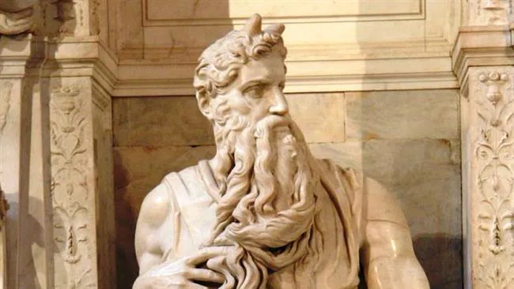
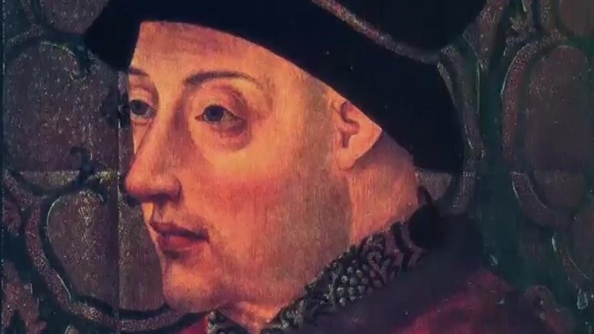
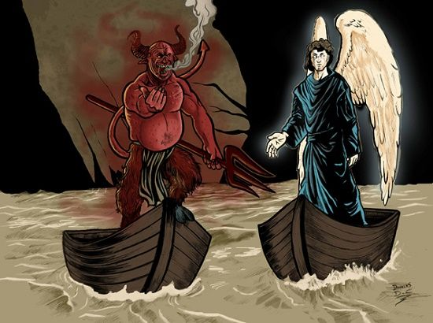

Contexto histórico
O Humanismo é um movimento de transição entre a Idade Média e o Renascimento (ou se preferir, entre o Trovadorismo e o Classicismo), ocorrido no século XV. Por ser um movimento literário de transição, não possui características únicas dele, e nem é consdierado um movimento literário por alguns estudiosos. As obras produzidas durante esse período levam características do Trovadorismo, ao mesmo tempo em que também possui características adquiridas do movimento moderno Renascentista. Nesse período, houve a transição do sistema feudal para o sistema mercantilista, onde os ideais burgueses começam a ter influência no âmbito social.
Características do Humanismo:
Com a queda da hegemonia da igreja, uma característica forte do movimento é o Antropocentrismo, onde o homem é o centro do mundo, valorizando o ser humano e suas características. Outras características marcantes são o Cientificismo, que se resume na ância de encontrar respostas científicas para o acontecimento de fenômenos naturais, o Racionalismo, crença de que a razão humana prevalece sobre tudo, a retratação da figura humana baseada no ideal clássico greco-romano e a desmonopolização do conhecimento, com o enfraquecimento da igreja e a invenção da imprensa. Quanto às produções literárias, nesse periodo foram produzidas as poesias palacianas, as prosas e os teatros.

Poesia palaciana
Sucessoras das cantigas produzidas no Trovadorismo, só que agora com uma estrutura textual bem elaborada, utilizando de métrica, ritmo, figuras de linguagem, ambiguiodades, idealismo e mais. Diferentemente das cantigas, ela não é escrita para ser cantada com música, e sim para ser recitada nos palácios da nobreza. Segue um exemplo de poesia palaciana:
Vã esperança e vã dor,
Antre amor e desamor,
Meu triste coração vejo.
Nestes extremos cativo
Ando sem fazer mudança,
E já vivi d'esperança
E agora vivo de choro vivo.
Contra mi mesmo pelejo,
Vem d'ua dor outra dor
E d'um desejo maior
Nasce outro mor desejo. "
Prosa
A prosa é uma forma de escrever onde o texto é escrito em linhas contínuas, estruturado em parágrafos. Neste período, a prosa é dividida entre crônicas historiográficas e em crônicas ficcionais.
Crônicas historiográficas
Uma crônica historiográfica é basicamente um relato de um acontecimento relacionado à história de Portugual, onde são contados os feitos heróicos de homens do reino. O principal autor desse tipo de obra foi Fernão Lopes, sendo considerado o pai da historiografia portuguesa.
Crônicas ficcionais
As crônicas ficcionais são uma adaptação das chamadas novelas de cavalaria, produzidas no Trovadorismo. Apenas foram adequadas para seguirem a corrente de pensamento e a situação social da época.
De forma resumida, podemos citar as características do Humanismo como:
• Antropocentrismo (o homem como centro do universo)
• Cientificismo (busca por respostas científicas e não divinas)
• Racionalismo (a razão humana prevalece acima de tudo)
• Enfraquecimento da influência da Igreja Católica
• Valorização do corpo e pensamento humano
• Busca da beleza e perfeição
• Descentralização do conhecimento
• Invenção da imprensa
Autores e obras
Fernão Lopes
Fernão Lopes nasceu em Lisboa, tendo origem humilde, se tornando escrivão e cronista para a coroa portuguesa. Foi peça chave durante esse período literário, pois foi ele quem levou o movimento humanista para Portugual. Como dito anteriormente, é considerado o pai da historiografia portuguesa, responsável por separar o real da fantasia, e escrever imparcialmente os fatos ocorridos durante a história dos reinos portugueses. Ele produziu obras como Crônica de El-Rei D. Pedro I e Crônica de El-Rei D. Fernando.

Auto da barca do inferno
Auto da Barca do Inferno é uma peça de teatro produzida durante o Humanismo e escrita por Gil Vicente, considerado o pai do teatro português. A peça foi encenada em 1531 e é uma da Trilogia das Barcas, junto de Auto da Barca do Purgatório e Auto da Barca da Glória. Na história da obra existem 2 barqueiros que recebem as almas dos que já se foram, e são um Anjo e um Diabo. No desenrolar da trama, cada personagem é julgado e entra na barca que vai para o céu ou na barca que vai ao inferno, de acordo com o modo em que viveu sua vida. Segue um trecho da obra:
a vós estou esperando,
que morrestes pelejando
por Cristo, Senhor dos Céus!
Sois livres de todo mal,
mártires da Santa Igreja,
que quem morre em tal peleja
merece paz eternal.”
